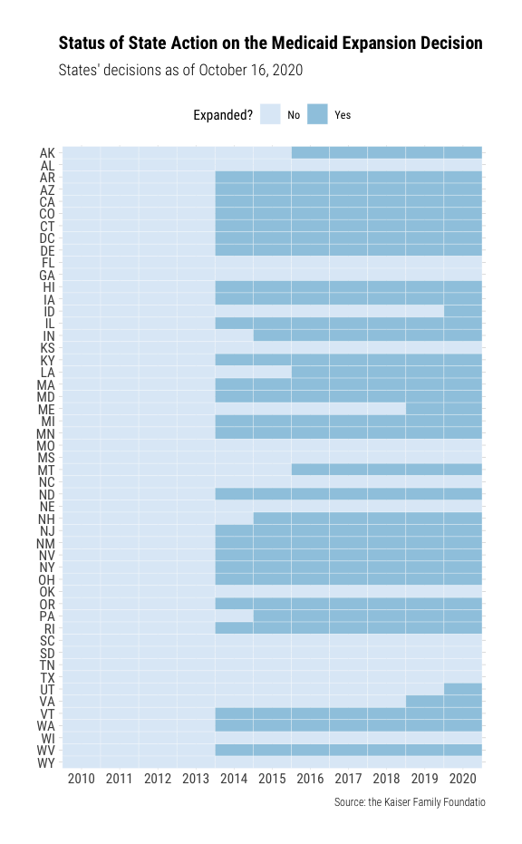

The package {aca.medicaid.expansion} contains a dataset status, which includes the status of state action on the ACA Medicaid expansion decision. The first version of the data is from the Kaiser Family Foundation.
Examples
library(tidyverse)
#> ── Attaching packages ──────────────────────────────────────────────────────────── tidyverse 1.2.1 ──
#> ✓ ggplot2 3.3.0 ✓ purrr 0.3.4
#> ✓ tibble 3.0.1 ✓ dplyr 1.0.0
#> ✓ tidyr 1.1.0 ✓ stringr 1.4.0
#> ✓ readr 1.3.1 ✓ forcats 0.4.0
#> Warning: package 'tibble' was built under R version 3.6.2
#> Warning: package 'tidyr' was built under R version 3.6.2
#> Warning: package 'purrr' was built under R version 3.6.2
#> Warning: package 'dplyr' was built under R version 3.6.2
#> ── Conflicts ─────────────────────────────────────────────────────────────── tidyverse_conflicts() ──
#> x dplyr::filter() masks stats::filter()
#> x dplyr::lag() masks stats::lag()
library(lubridate)
#>
#> Attaching package: 'lubridate'
#> The following object is masked from 'package:base':
#>
#> date
# Data
aca.medicaid.expansion::status
#> # A tibble: 51 x 6
#> fips usps state expansion_date expansion_status description
#> <chr> <chr> <chr> <date> <chr> <chr>
#> 1 01 AL Alabama NA Not Adopted <NA>
#> 2 02 AK Alaska 2015-09-01 Adopted and Imple… Implemented expans…
#> 3 04 AZ Arizona 2014-01-01 Adopted and Imple… Implemented expans…
#> 4 05 AR Arkansas 2014-01-01 Adopted and Imple… Implemented expans…
#> 5 06 CA California 2014-01-01 Adopted and Imple… Implemented expans…
#> 6 08 CO Colorado 2014-01-01 Adopted and Imple… Implemented expans…
#> 7 09 CT Connecticut 2014-01-01 Adopted and Imple… Implemented expans…
#> 8 10 DE Delaware 2014-01-01 Adopted and Imple… Implemented expans…
#> 9 11 DC District o… 2014-01-01 Adopted and Imple… Implemented expans…
#> 10 12 FL Florida NA Not Adopted <NA>
#> # … with 41 more rows
# Convert the dataset to a state-year panel
add_st_yr_dummy = function(dta, bgn_yr, end_yr) {
dta %>%
mutate(year = list(bgn_yr:end_yr)) %>%
unnest(year) %>%
mutate(round_exp_year = round_date(expansion_date, "year")) %>%
mutate(round_exp_year = year(round_exp_year)) %>%
mutate(expansion = if_else(year < round_exp_year |
is.na(round_exp_year), FALSE, TRUE)) %>%
select(-round_exp_year)
}
aca.medicaid.expansion::status %>%
add_st_yr_dummy(bgn_yr = 2010, end_yr = 2020) %>%
select(usps, year, expansion) %>%
print() -> st_yr_expansion
#> # A tibble: 561 x 3
#> usps year expansion
#> <chr> <int> <lgl>
#> 1 AL 2010 FALSE
#> 2 AL 2011 FALSE
#> 3 AL 2012 FALSE
#> 4 AL 2013 FALSE
#> 5 AL 2014 FALSE
#> 6 AL 2015 FALSE
#> 7 AL 2016 FALSE
#> 8 AL 2017 FALSE
#> 9 AL 2018 FALSE
#> 10 AL 2019 FALSE
#> # … with 551 more rows
# Plot the expansion status for each state
st_yr_expansion %>%
mutate(usps = forcats::fct_rev(usps)) %>%
mutate(year = as.character(year)) %>%
mutate(expansion = if_else(expansion, "Yes", "No")) %>%
ggplot(aes(x = year, y = usps, fill = expansion)) +
geom_tile(colour = "white") +
labs(x = NULL, y = NULL, fill = "Expanded?",
title = "Status of State Action on the Medicaid Expansion Decision",
subtitle = "States' decisions as of October 16, 2020",
caption = "Source: the Kaiser Family Foundatio") +
hrbrthemes::theme_ipsum_rc(plot_title_size = 15) +
theme(legend.position = "top") +
scale_fill_brewer() 